MDS: recovering psychological spaces
Reader-friendly version of the 53 lecture slides: the lecture content in normal flow, with figure descriptions and data tables where the figure carries data. Open the presentation.
Slide 1

MDS: recovering psychological spaces
Slide 2
Last time: a space, a distance, three rules
- A representation is a list of numbers → a point in a space
- Comparing two of them means choosing a distance — Euclidean, cosine, correlation — and the choice changes the ranking
- A real distance obeys identity, symmetry, triangle inequality
Applying a distance to every pair of stimuli gave us the dissimilarity matrix (RDM).
Today: that matrix is a wall of numbers. Can we turn it back into a map?
Slide 3
Similarity is the oldest measurement in the field
- Ask a person which two of three colors go together; ask which two Morse-code beeps get confused; ask a pigeon to peck for one hue and see how much it generalizes to a neighboring one.
- All of these return the same kind of number: how close are stimulus and stimulus ?
- Nothing in that question mentions neurons, features, or mechanisms — which is exactly why it survived a century of theory change.
- The bet of this lecture: if you collect all the pairwise answers, the structure of the set falls out.
Slide 4
From responses to a dissimilarity matrix
For every pair of stimuli, one number: how far apart are their responses?
- is the dissimilarity matrix — in neuroscience, the representational dissimilarity matrix (RDM).
- It lives in stimulus × stimulus space, so its size depends only on — not on how many neurons, voxels or units you measured.
- Small = the system treats and alike. Large = it tells them apart.
Slide 5
Computing an RDM from a response matrix
import numpy as np
from scipy.spatial.distance import pdist, squareform
R = np.load("responses.npy") # (N stimuli, n channels)
print(R.shape) # (92, 50000) voxels or (92, 4096) units
# pdist returns the upper triangle: N(N-1)/2 numbers, the pairs i < j
d_vec = pdist(R, metric="correlation") # 1 - Pearson r, pattern to pattern
D = squareform(d_vec) # (N, N): symmetric, zero diagonal
assert np.allclose(D, D.T) and np.allclose(np.diag(D), 0)
pdistnever forms the matrix — it computes exactly the upper triangle.squareformconverts either way.- Swap
metric="euclidean"(or"cosine") to change the geometry; nothing downstream changes.
Slide 6
The same object, from three very different places
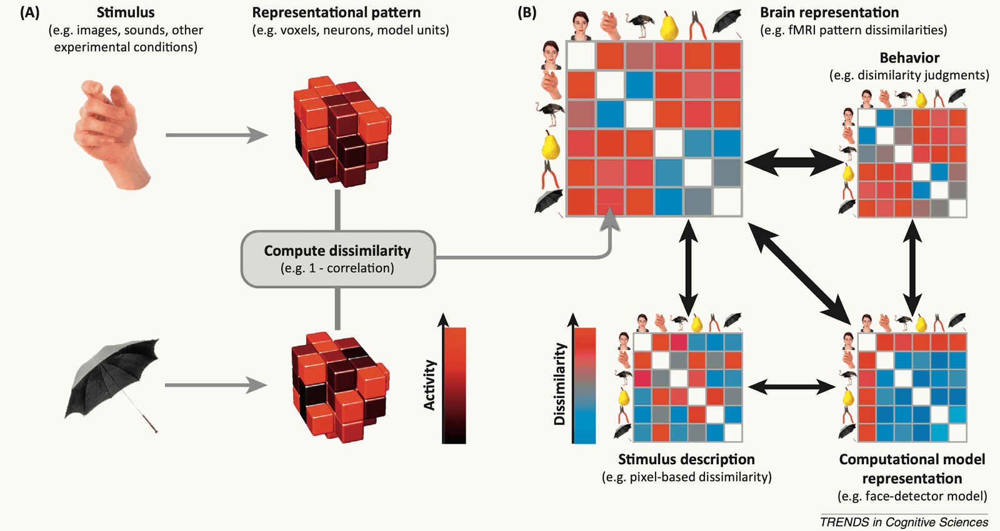
center Schematic: stimuli become activity patterns, patterns become dissimilarity matrices, and matrices from brain, behavior, stimulus description, and a computational model are linked by comparison arrows
Open full-size figure- A brain (voxel or spike patterns), a behavior (similarity judgments, confusions), and a model (unit activations) each give an matrix over the same stimuli.
- Today: build one, and look at it. Comparing two of them is one operation with a name — we get to it at the end of the lecture.
Slide 7
Human similarity judgments
Peterson and colleagues asked people: how similar are these two images, from 0 to 10? Ten raters for every pair of 120 animal photographs.

Two tiger photographs and a monkey photograph, labeled A, B and C
Open full-size figureMean rating A–B: 10.0 · A–C: 2.9 · B–C: 2.4
Slide 8
Which relationships are preserved?
The same three photographs, four kinds of measurement: pixels, IT neurons, network activations, human ratings.
The same two tiger photographs and monkey photograph, labeled A, B and C
Open full-size figureDo they all agree that A and B are closer than A and C? That is what Assignment 1 measures.
Slide 9
Behaviour gives a dissimilarity matrix too
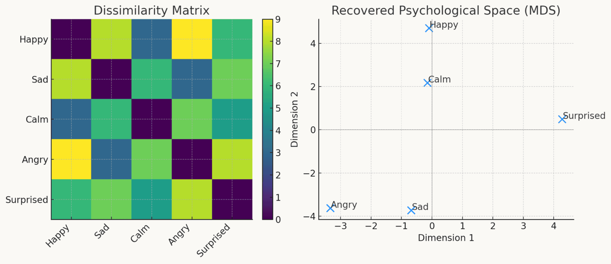
center A small table of pairwise emotion-similarity judgments beside the 2-D map computed from it, where related emotions land near one another
Open full-size figure- Similarity ratings, sorting tasks, confusion rates in a same/different task — all are measurements, collected without any recording equipment.
- Run them through the same pipeline and you get a psychological space: the map on the right.
Slide 10
Why anyone cares: two species, one structure
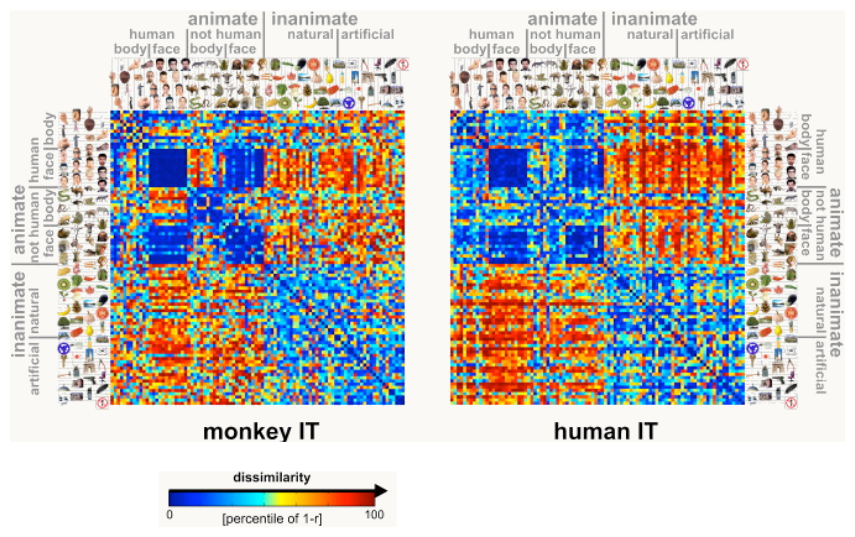
center Two 92-by-92 dissimilarity matrices, monkey IT and human IT, both showing the same blue animate block and warm inanimate block with face and body sub-blocks
Open full-size figure- The same 92 object images, shown to a monkey (single-unit IT recordings) and to a human (fMRI IT voxels). Two utterly different measurement systems, two matrices.
- They look strikingly alike — an animate/inanimate block structure with face and body sub-blocks in both.
Slide 11
An RDM is a wall of numbers
stimuli is 4,186 pairwise dissimilarities. Nobody reads that. Turn it into a map.
Slide 12
Multidimensional scaling: the problem
Given a dissimilarity matrix over stimuli, with entries .
Find coordinates — one point per stimulus —
such that the distances in the map reproduce the dissimilarities you measured:
- Usually or — because the point is to look at it.
- Note what is not required: no access to , no idea what the channels were, no model of the stimuli. is the only input.
- Two ways to solve it, in the next four slides: an exact one (linear algebra) and an approximate one (optimization).
Slide 13
There is also a closed-form route
Classical MDS (Torgerson 1952) turns the distance table into inner products and reads coordinates off directly — no iteration at all.
- It is exact, and it is what
sklearn's classical solver does under the hood - It needs machinery we have not built yet (eigendecomposition — that is next lecture)
- And it only applies when the dissimilarities really are Euclidean distances
We will use the optimisation route instead — not because it is easier, but because the method is the one that matters for the rest of this course.
Slide 14
Worked example — the color circle falls out
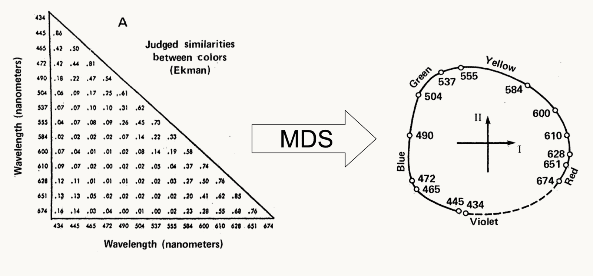
center MDS of judged similarities among 14 monochromatic lights: the points fall on a circle ordered by wavelength, with violet closing the loop next to red
Open full-size figure- Input: humans judging the similarity of 14 monochromatic lights, 434–674 nm — a triangle of numbers, no spatial information whatsoever.
- Output: a circle, ordered by wavelength, closing the gap between violet and red. Nobody told the algorithm that hue is circular.
Slide 15
Stress-based MDS — the optimization view
Real dissimilarities are noisy, and often no exact Euclidean configuration exists. So stop demanding one and minimize the mismatch instead:
- Stress is the mismatch energy: zero for a perfect map and growing with every mismatched pair.
- Minimize it by SMACOF stress majorization (what
sklearndoes): move each point a little, downhill, repeat. - The first optimization loop of the semester — the same idea later trains every network.
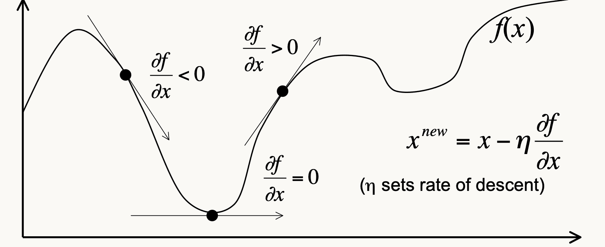
A curve f of x with tangent slopes marked at three points and the downhill update rule x-new equals x minus eta times the slope
Open full-size figure{kind=link}
SMACOF — iterative majorization, step downhill each round
Slide 16
Normalized MDS stress
Let be a distance in the map and its fitted target.
- Metric MDS: targets are the supplied dissimilarities. Nonmetric MDS: targets are fitted to their rank order. Dividing by the map distances removes the raw formula's squared-distance units.
- Worked example: squared mismatch , squared map distances . Stress-1 .
- This 0–1 number is what
sklearnprints for a nonmetric fit. Kruskal's 1964 rule of thumb reads it: 0.05 excellent · 0.10 fair · 0.20 poor. Better than any threshold: refit on shuffled dissimilarities at the same item count and dimension.
Slide 17
Watch it relax
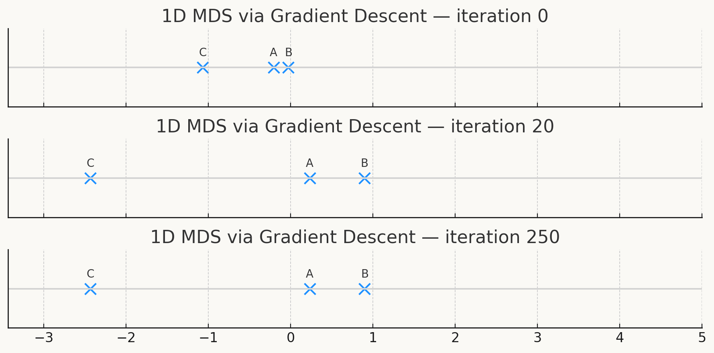
Three snapshots of 1-D MDS: points A, B, C start bunched on a line at iteration 0 and spread to their final spacing by iteration 250
Open full-size figure{kind=link}
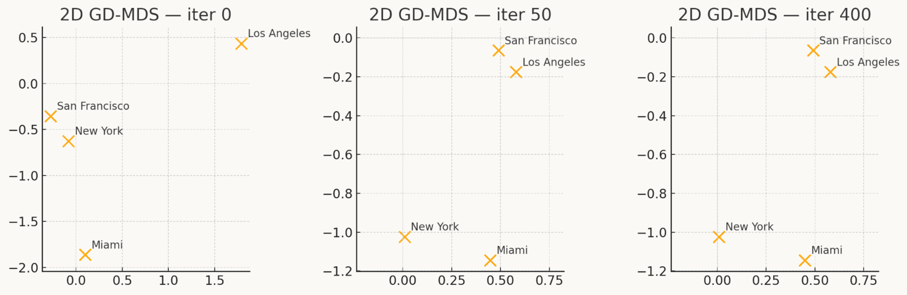
Three snapshots of 2-D MDS on four US cities: random starting positions settle into the familiar map arrangement by iteration 400
Open full-size figure{kind=link}
- Left, 1-D: three points slide along a line until the three pairwise gaps are as close to right as they can be.
- Right, 2-D: four US cities, initialized at random, settle into the map you would draw from an atlas — from driving distances alone.
Slide 18
Running MDS in three lines
from sklearn.manifold import MDS
mds = MDS(n_components=2, # k = 2, because we want to look at it
metric="precomputed", # feed D directly, NOT the raw R
n_init=8, normalized_stress="auto", random_state=0)
Y = mds.fit_transform(D) # (N, 2) coordinates - one row per stimulus
print(Y.shape, mds.stress_) # residual mismatch: lower is better
# non-metric (ordinal) MDS - fits the RANK ORDER of the dissimilarities
mds_nm = MDS(n_components=2, metric="precomputed", metric_mds=False,
n_init=8, normalized_stress="auto", random_state=0)
Y_nm = mds_nm.fit_transform(D)
metric="precomputed"is the flag that matters (calleddissimilarity=before scikit-learn 1.8) — otherwise sklearn computes Euclidean distances fromDas if it were raw data.n_init=8: stress-based MDS has local minima, so restart and keep the best.
Slide 19
Explore: dimensions, stress, and clusters

Left: nonmetric MDS map of 120 animal images from human similarity ratings, points coloured by cluster. Right: the dendrogram of the same dissimilarities with a dashed cut line at four clusters
Open full-size figureSlide 20
Reading an MDS solution — three warnings
- The solution is not unique. Shift, rotate or reflect the whole configuration and the pairwise distances are unchanged, so stress is unchanged. The axes mean nothing. Only relative positions do.
- The dimension is your choice. Plot stress against : it always falls, so look for the elbow. Two dimensions is a display convenience, not a discovery.
- Low stress ≠ true. Enough dimensions will fit anything, including noise. Report normalized stress (Stress-1), and say how many dimensions you used.
A useful habit: if a story about your map depends on which way is "up", the story is about the plot, not the data.
Slide 21
Emotion has a geometry too

Map of 2,185 emotion videos, each a letter colored by its dominant category: 27 categories form regions joined by smooth gradients rather than gaps
Open full-size figureeach letter is one video, colored by its dominant category
- 2,185 short videos rated by hundreds of viewers for what they felt. No stimulus dimensions, no recordings — judgments are the only input.
- The structure that comes back needs 27 categories, not the textbook two, and they are joined by smooth gradients rather than gaps: anxiety shades into fear, fear into horror.
- Callback: the toy five-emotion table from earlier in this lecture, run for real.
The 2-D layout here uses a nonlinear cousin of MDS — next week.
Slide 22
Metric → non-metric: weaken the assumption
- Classical / metric MDS assumes distance in the map is (a known function of) the measured dissimilarity — quite a strong demand on a human rating scale.
- Non-metric (ordinal) MDS keeps only the rank order: if , then the map should put closer than . Nothing more.
- Fit the configuration and the monotone transform , alternating between them (isotonic regression on , gradient step on ).
- Only numerical, local solutions — no closed form, no clean math.
- Worth it: a subject who rates on a 1–7 scale has produced an ordering, not a measurement. Non-metric MDS asks only for what they actually gave you.
Slide 23
Shepard's universal law of generalization

Twelve small panels of generalization plotted against distance in psychological space — sizes, hues, phonemes, Morse code, human and pigeon data — each tracing the same exponential decay
Open full-size figure- Recover a psychological space by MDS, then plot measured generalization against distance in that space. Across twelve datasets it is the same curve:
- Sizes, lightnesses, spectral hues, vowels, consonants, Morse code, free-form shapes. Humans and pigeons.
- So similarity is an exponential function of psychological distance — a genuine law, and not a circular one: non-metric MDS fits rank order only, so the exponential shape was never built in.
Slide 24
Exponential and Gaussian decay
Two curves, each with two fitted parameters:
- At : exponential slope ; Gaussian slope .
- For , at : versus .
- Beating a straight line says little. Beating the Gaussian — flat at where the exponential is steepest — is the result.

Exponential and Gaussian similarity curves with the same value at zero but different initial slopes
Open full-size figureSlide 25
Fitting curves and interpreting R²
Fitting chooses parameters that minimize squared residuals.
- : fitted similarity. : mean observed similarity.
- Residual sum , total sum : .
- Published values are usually fits to binned means. A good fit to bin means need not predict individual pairs well; Assignment 1 fits the raw pairs.

Illustrative noisy pair observations with their bin means and an exponential curve
Open full-size figureSlide 26
Rank order leaves the decay shape open
| Nonmetric MDS constrains | It does not prescribe |
|---|---|
| Which pairs are closer than others | An exponential similarity curve |
| A low-dimensional configuration | A Gaussian similarity curve |
- A similarity ranking of specifies an order, not the distances between those levels.
- Comparing decay families tests a shape that was not fixed by the MDS objective.
- The map and the curve still use the same ratings. Independent ratings provide a stronger test.
Slide 27
Why exponential? Average over what you don't know

Left: one observed example on a line with sampled candidate regions of many sizes stacked above it; right: the averaged generalization gradient on a log scale falling as a straight line, matching the exponential exactly
Open full-size figure- You meet one example of a new concept and have no idea how far it extends — Shepard calls that unknown extent a consequential region.
- Don't gamble on one guess: keep every region that could contain it, weight each by how plausible it is, and average across all of them.
- Do that honestly and the gradient is exactly — not fitted, derived.
The law is not a quirk of psychology. It is what optimal generalization looks like from outside.
Slide 28
But: twelve datasets of simple stimuli
- Look again at what the law was tested on: sizes, hues, vowels, Morse code, geometric shapes.
- Low-dimensional, small sets, made in a lab. Nothing like a photograph.
- The obvious question — does it hold for real-world stimuli? — went unanswered for 35 years.
- Not because anyone doubted it. Because of a counting problem.
Slide 29
Shepard's law meets deep networks
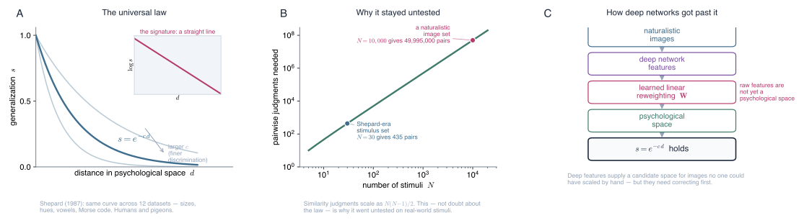
center Three panels: the exponential generalization curve with its straight-line log signature, the quadratic growth of pairwise judgments needed — 435 pairs for 30 stimuli, nearly 50 million for 10,000 — and the method that finally tested the law on photographs
Open full-size figureSlide 30
The answer: the law holds
- 214,200 human similarity judgments + 390,819 human generalization judgments on naturalistic images.
- Deep-network features supply the candidate psychological space; humans supply the judgments.
- The exponential law survives in the naturalistic, high-dimensional regime.
- A 1987 law, formulated on Morse code and color chips, holds for photographs.
Slide 31
Careful: raw network features are not psychological space
- Object-recognition networks predict human similarity judgments surprisingly well ( for the raw features on these animals) — but they miss real structure.
- The fix is a learned linear reweighting of the feature dimensions, obtained by convex optimization.
- So the network supplies a basis; human data still has to say which directions matter.
- Callback: the choice of distance from the first lecture — now learned from data instead of chosen by hand.
Slide 32
The same 120 animals, mapped three ways
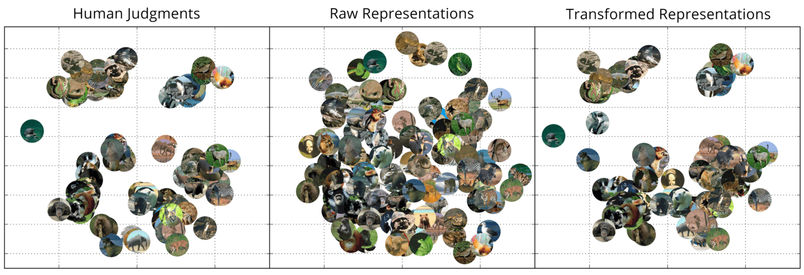
Three MDS maps of the same 120 animals: human judgments form separated groups, raw network features collapse into one undifferentiated cloud, and reweighted features recover the groups
Open full-size figure{kind=link}
- Non-metric MDS on each of the three matrices — the method from earlier in this lecture.
- Human judgments fall into separated groups; raw features give one undifferentiated cloud.
- Reweight the dimensions and the groups come back — the information was there, just not in the geometry.
Slide 33
Correlating two RDMs
Two systems, the same stimuli, two matrices: from the judgments, from a layer. Flatten each upper triangle into a list of numbers and correlate the two lists:
In practice: iu = np.triu_indices(N, k=1), then spearmanr(D1[iu], D2[iu]).
- Upper triangle only. The diagonal is zeros in both matrices — perfect agreement you did not measure — and the lower half is a copy of the upper. Feeding either one in fakes agreement, or fakes how much data you have.
- Rank correlation, because the two systems share no scale: a distance between voxel patterns and a distance between unit activations are not the same kind of number. Only the ordering of the pairs is comparable.
- The operation has a name: representational similarity analysis.
Slide 34
What that number does and does not say
- It says the two systems order the pairs alike: what one treats as close, the other tends to treat as close. That is a claim about geometry, and it is the only claim it is.
- It does not say they get there the same way. Two systems can agree on every pair while measuring completely different things about the images.
- And on its own means very little. The from a few slides ago only became informative beside the reweighted features and beside how well people agree with each other (the noise ceiling, next slide) — a bare correlation has nothing to be large relative to.
- Assignment 1 swaps VGG for ResNet-18 and reports Spearman on correlation distances, not a regression : expect about 0.4, not .58. That is not a bug.
- Matching geometry is evidence about a representation, not a demonstration of shared mechanism.
Slide 35
Human reliability sets the comparison scale
Split-half reliability: correlate two independent sets of ratings for the same pairs. That agreement is the noise ceiling — how well the measurement predicts itself, and the bar no model should beat.
| Comparison | Statistic |
|---|---|
| Rating half 1 versus rating half 2 | Reliability of the human measurement |
| Network distances versus human dissimilarities | Representational alignment |
- A1 uses Spearman rank correlation for both quantities. Pearson , Spearman and regression are different statistics.
- Peterson's two rater halves agree at ; on the Spearman scale the ceiling is about . Report a model as a fraction of the ceiling: alignment / ceiling .
- The averaged ratings are more reliable than either half, so that fraction is an upper bound on what the model has reached.
Slide 36
Aside: language models recover the color wheel
- Ask GPT for pairwise similarity judgments — no images, just text — across six psychophysical datasets.
- Correlates significantly with human data in every domain, recovering the color wheel and the pitch spiral.
- Callback: that is Ekman's 1954 color circle, from the first half of this lecture, recovered from language alone.
- Odd result: a vision-and-language model (GPT-4) is not reliably better on the visual domains.
Slide 37
The payoff: human similarity breaks all three rules
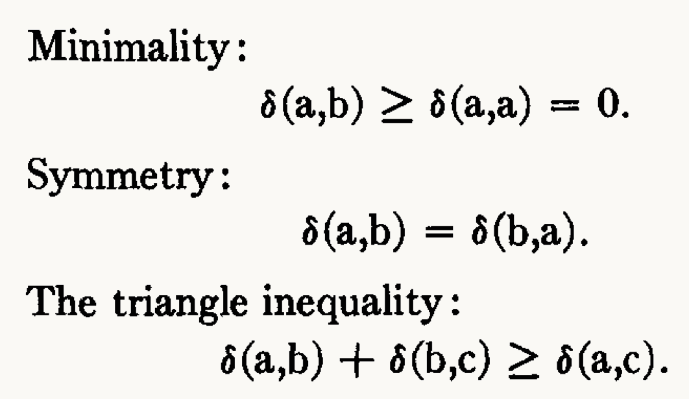
The three metric axioms written out: minimality, symmetry, and the triangle inequality
Open full-size figure{kind=link}
Every method so far assumes dissimilarity behaves like a distance — the three metric axioms on the left.
Tversky's argument, with data: human similarity judgments violate all three.
- If they do, "psychological space" is a useful approximation, not a discovered fact.
- Worth knowing before you publish a map, not after.
Slide 38
Violations of minimality and symmetry
Minimality —
- Rothkopf's Morse-code study: participants judged some different pairs "same" more reliably than they judged an identical pair "same".
- Self-similarity is not constant across items — familiar signals are recognized as themselves more reliably than unfamiliar ones.
Symmetry —
- A camel is more similar to a horse than a horse is to a camel.
- An ellipse is more similar to a circle than a circle is to an ellipse.
- The less typical / less salient item is judged more similar to the prototype than the reverse. Direction of comparison matters.
Slide 39
Violations of the triangle inequality — and of hierarchy

Triangle of three objects — lamp, moon, ball — where each neighboring pair shares a feature but the far pair shares none
Open full-size figurelamp ~ moon (both luminous) · moon ~ ball (both round) · lamp ≁ ball
- Triangle inequality: . Two items can each be similar to a third on different features, and not at all similar to each other.
- Nearest-neighbor restriction: in a -dimensional Euclidean space, a point can be the nearest neighbor of only a bounded number of others. Conceptual hierarchies break that bound — fruit is the nearest neighbor of many fruits at once, but an MDS map can only put it near two or three.
Slide 40
Not every structure is a space
The metric axioms, and MDS with them, assume that similarity lives in a space. Categories suggest another reading of the same matrix : nested groups, a tree. Hierarchical clustering builds that tree by repeatedly merging the closest items or groups (the linkage rule decides what "closest" means for a group). Assignment 1 uses it in the bonus.
Slide 41
The pay-off: category structure, in two species
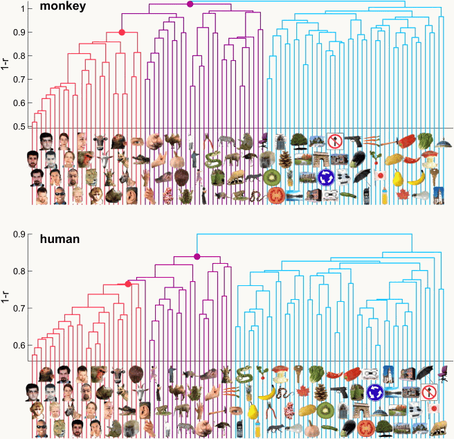
center Dendrograms from the monkey and human IT matrices: both trees split first into animate versus inanimate, then faces and bodies within animate
Open full-size figure- Cluster the monkey and human IT dissimilarity matrices from earlier. Both trees split first into animate vs. inanimate, then faces / bodies within animate.
- Nobody supplied labels. The structure is in the dissimilarities.
Slide 42
MDS and clustering are different hypotheses
| MDS | Hierarchical clustering | |
|---|---|---|
| Output | continuous coordinates | a nested tree |
| Structure assumed | a smooth space — items vary along dimensions | discrete categories — items belong to groups |
| Fits well | perceptual continua (hue, pitch, size) | taxonomies, category structure |
| Free parameter | number of dimensions | linkage rule + where to cut |
| Fails on | superordinate terms, deep hierarchies | genuinely continuous variation |
Run both. Where they disagree is usually where the interesting question is.
Slide 43
Assignment 1: the analysis sequence
Part 2 is this lecture, step by step. Parts 1, 3, 4: distances and RDMs · PCA and monkey IT · t-SNE sweeps. Bonus: metric tests, hierarchical clustering, robustness.
| Step | What you do |
|---|---|
| 2a–2c | Check the similarity matrix; humans vs. a trained and an untrained network; dead units |
| 2d | Similarity → dissimilarity: , zero diagonal |
| 2e–2f | Nonmetric MDS and its stress, against a shuffled control; put the images on the map |
| 2g | Shepard's law: line vs. exponential vs. Gaussian, on the raw pairs |
| 2h | Do networks predict human similarity the same way? Layer by layer |
| 2i | Alignment: Spearman per layer, as a fraction of the split-half ceiling |
Due Tuesday, September 29. Research-trail entry 1: Friday, September 18.
Slide 44
Both score 70%. What did they learn?
Task: label each photograph wolf or husky. Classifiers A and B: 7/10 correct.

Ten wolf and husky photographs with true labels and illustrative predictions: A and B each get seven correct but make errors on different images
Open full-size figureSlide 45
Where this goes
- Tuesday — PCA: the same kind of description, but with ordered, meaningful axes, obtained directly from the data rather than by iterating.
- And the idea you used today comes back: minimize a mismatch by stepping downhill is how every network later in the course is trained.
- Thursday — t-SNE and UMAP: nonlinear cousins of MDS that preserve neighborhoods rather than distances, and lie about global structure in exchange.
- Later in Theme 1 — the modern vocabulary for representational geometry, and the hinge into mechanism.
- Later in the course — RSA at full scale: how large a correlation has to be before it counts, and how monkey IT, human IT and a CNN layer end up ranked on the same axis.
- Assignment 1 (due Tuesday 9/29) — build RDMs, run MDS and PCA, sweep t-SNE — and cluster, in the bonus — on real neural and behavioral data.
Slide 46
Recap
- A dissimilarity matrix turns any set of responses — neurons, voxels, model units, judgments — into one object whose size does not depend on the measurement system.
- MDS turns that matrix into a map, exactly (classical, eigendecomposition) or approximately (stress, SMACOF). The axes mean nothing; the relative positions mean everything.
- Shepard's law — similarity falls off exponentially with distance in psychological space — is what keeps the enterprise honest.
- Tversky: judged similarity violates the metric axioms. Treat the map as a useful approximation.
- Hierarchical clustering reads the same matrix as nested categories instead of a flat space (the algorithm is in the appendix).
- Representational similarity analysis: correlate the upper triangles of two such matrices and you get one number — how far two systems agree about what resembles what.
Slide 47
Appendix · Hierarchical clustering — the idea

Six labelled points scattered in a box beside the dendrogram built from them: nearby points join low, distant groups join high
Open full-size figure- Build a recursive grouping of the stimuli and draw it as a dendrogram: leaves are stimuli, height of a join is the distance at which two groups merged.
- Agglomerative (bottom-up): start with singleton clusters, merge the closest pair, repeat.
- Divisive (top-down) also exists; agglomerative is what the Assignment 1 bonus uses.
- Input is again just — no coordinates needed, so it works on judged similarity as happily as on firing rates.
Slide 48
Appendix · The agglomerative algorithm, and the linkage choice
- Compute all pairwise distances — the matrix .
- Merge the two closest clusters.
- Update the distances from the new cluster to all others, using a linkage rule.
- Repeat until one cluster remains.
In practice: scipy.cluster.hierarchy.linkage(squareform(D), method="average").
Step 3 is the whole design decision:
- Single — distance to the closest member. Chains.
- Complete — distance to the farthest member. Compact, equal-size clusters.
- Average — mean over all cross-pairs. The usual compromise.
- Ward — merge the pair that increases within-cluster variance least. Needs coordinates, not just .
Slide 49
Appendix · Linkage changes the answer

center Three dendrograms of the same data under single, complete, and average linkage — three different tree structures
Open full-size figure- Same data, same distances, three linkage rules — three different trees.
- Single linkage chains: one long thin cluster forms by hopping neighbor to neighbor. Complete linkage forces compact groups, which can split a genuinely elongated one.
Slide 50
Appendix · How many clusters? Cut the tree

A dendrogram with a dashed horizontal cut line producing four colored clusters, shown alongside the same points colored by cluster in the plane
Open full-size figure- A dendrogram is not a clustering — it is every clustering at once. You get groups by cutting it at a height.
- Cut low → many small clusters. Cut high → few large ones. The method does not choose for you.
- Heuristics help (a large vertical gap before the next merge; a silhouette score), but the honest statement is that is a modelling choice you must defend.
Slide 51
Appendix · The silhouette score measures separation
For one point:
- : mean distance to other points in its own group.
- : smallest mean distance to a different group.
Example: , gives .
Near : separated. Near : on a boundary. Negative: closer to another group. Assignment 1 takes about and up as separating — a convention, not a threshold.
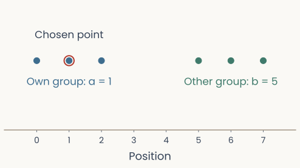
A chosen point with mean distance one to its own group and five to the other group
Open full-size figure{kind=link}
Slide 52
Appendix · A tree becomes groups at a chosen cut
from scipy.cluster.hierarchy import linkage, fcluster
from scipy.spatial.distance import pdist
tree = linkage(pdist(points), method="single")
labels = fcluster(tree, t=0.5, criterion="distance")
- Single linkage joins groups through their closest pair. A cut at connects chains of steps no longer than .
- Cophenetic distance: the height at which a pair first joins in the tree.
- Adjusted Rand index (ARI): agreement between two groupings, corrected for chance. Identical partitions ; chance expectation .
Slide 53
Appendix · Clustering always returns a tree

Dendrogram of over a thousand patients clustered on fMRI connectivity, cut by a dashed line into four colored groups proposed as depression biotypes
Open full-size figurethe dashed line is the cut; four colors are the four proposed groups
- Over a thousand patients with depression, clustered on resting-state fMRI connectivity, cut into four "biotypes" — each one claimed to predict who responds to which treatment.
- Same algorithm as the last three slides. The arithmetic is not in question.
- The biotypes did not replicate. Reanalysis found no evidence of genuine cluster structure in the data — and a tree comes back from any matrix, including one with no groups in it.
- Whether the branches name something real is a separate claim, needing separate evidence.